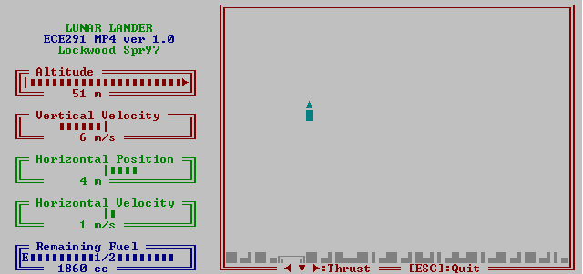

| ECE291 |
Computer Engineering II |
Lockwood, Spring 1997 |
Machine Problem 4: Lunar Lander
| Assigned |
Tuesday March 18, 1997 |
| Due Date |
Tuesday April 8, 1997, 5pm |
| Purpose: |
Interrupts & Real-time systems
|
| Points | 50 |
Introduction
Mankind first visited the moon in 1969. The lunar lander
was the vehicle that travelled from orbit to the
surface of the moon.
A lunar lander is controlled by rocket engines.
Rocket engines produce a constant force in the opposite direction that
they are fired. The main truster points in the downward direction
and is used to counteract the force of gravity. Side thusters
control movement in the horizontal direction.
The goal of this machine problem is gently land your craft
on the surface of the moon.
Your lander will be damaged or destroyed if you descend too fast.
The craft will also be destroyed if you attemped to land
on a surface other than the landing pad.
You will find yourself lost in space if you stray too far away from
the destination. Finally, you will lose control of the thrusters if
you run out of fuel.
For more information about the real lunar landings, see the references below:
- A brief history of NASA's lunar landing missions is summarized in
On the Frontier.
- Documentation of the Apollo 11 mission
(complete with AVI video clips) has been written by:
Eric M. Jones
Implementation
A screen dump of the working library-based version of the program
that you are to write is shown
below. The gauges on the left show altitude, velocities, position, and
fuel. The window on the right shows the position of the craft as it
approaches the surface of the moon. The small landing pad appears at
the lower-left corner of the main
of the window. The screen is drawn using
extended ASCII characters on a text-mode video screen.

Interrupts are used to read the keyboard and perform
real-time calculations at periodic intervals.
The left, right, and downward arrow keys
are used to control the operations of the thrusters.
By reading scan codes directly
from the keyboard, the program is able to
decode simultaneous keypresses.
A Thurster operates at full capacity while the button
is pressed.
The timer is used to periodically
compute new values of acceleration, velocity, and position.
The function which performs these calculations
is chained onto the default
system timer interrupt vector and called 18 times a second.
Physical Equations
The program tracks the acceleration, velocity, and position of the
lunar lander along both the horizontal and vertical directions.
The lunar lander has a mass of 1000kg.
The main thruster (T) provides a force of 5000 Newtons.
Firing the main thruster results in an acceleration of
5 m/s^2 in the upward direction.
The left and right side-thrusters (TL and TR) can each produce
a force of 2000 Newtons.
At all times, the lunar gravitational field
accelerates the lander downward at a rate of
3 meters per second squared (m/s^2). The net motion of the lander
can be determined by summing the forces.
Recall that acceleration (A) is the time derivative of
velocity (V) and that position (X) is the time derivative of velocity (V).
For this problem, it is convienient to calculate the piece-wise integral
of acceleration to obtain velocity and the piece-wise integral of
velocity to calculate the position. Using Vi-1 as the
previous velocity and Xi-1 as the previous postion,
new values of A, V, and X can be calculated at each instant of time
as shown below:
Ai = Sum of forces / Mass
Vi = Vi-1 + Ai * dt
X i= Xi-1 + Vi * dt
Numeric Representation
By carefully choosing units for time and position, integer
arithmetic can be used to internally
calculate acceleration, velocity, and position.
Because the default PC timer interval is 1/18 second,
it is convienient to measure time (dt) in units of 1/18 sec.
To express acceleration in standard units of m/s^2, distance is
measured in units of 1/18^2=1/324 of a meter. Using these conventions,
therefore, velocity is measured in units of 1/18 m/s.
Data Display
Gauges and graphics are used to display information to the user.
Division is used to display position and velocity
in standard units of m and m/s. For the diagram of the
lunar lander on the low-resolution text-mode screen, each horizontal
column represents 2 meters and each vertical position represents
4 meters.
Procedures
You begin this problem with a set of working, modular procedures
that together implement the function of the program. You will earn points by
writing your own code to implement these procedures. You are strongly
encouraged to experiment with the library-based mp4.exe
to better understand how the program operates.
- InstTime
- Purpose: Install the timer interrupt
- Description:
This routines should chain the procedure MyTimeInt into
list of functions called by IRQ 0. It should preserve a pointer
to the original timer vector for use by MyTimeInt and
DeInstallTime.
- Notes:
The library function always installs the library-based
MyTimeInt routine.
- MyTimeInt
- Purpose: Calculate new acceleration, velocity, position, time,
and fuel values every 1/18th of a second.
- Description:
- As described above, velocity and acceleration are computed as
piece-wise integrals. This routine performs these calculations
on the periodic interval of the default timer (1/18 of a second).
The program reads modifieds the variables:
x, v_x, a_x, y, v_y, a_y, G, T, TL, and TR
(see variable section of given mp4.asm).
- Time should be incremented each time the procedure is called.
- Fuel should be decreased by the amount of thrust that
each thruster is exerting. If fuel runs out, T, TL, TR
should be reset to zero.
- ExitFlag should be set to 1 if the ship
touches the ground (y < 0) or gets lost in space (i.e., moves
outside the edges of the window on the screen).
- Notes:
- Remember that this is an interrupt service rotuine. Be sure
to save all registers and exit with IRET.
- Review the on-line lecture notes, especially
Lecture 14 and
Lecture 15.
- DeInstallTime
- Purpose: Restore original timer vector
- Description:
This routine should be called just before you exit your program.
It should restore the default vector for IRQ0.
- InstKey
- Purpose: Install a new keyboard handler.
- Description:
This function should replace (not chain) the
the default keyboard interrupt vector with
the function MyKeyInt.
It should preserve a pointer
to the original keyboard vector for use by
DeInstallKey.
- MyKeyInt
- Purpose: Read scan codes from the keyboard
- Description:
This function replaces the default keyboard vector
and is used for the duration of the program. The routine
should respond to the escape key and to the left, right, and down
arrow buttons.
When the following keys are pressed, the following actions should occur:
- ESC: Set ExitFlag=1.
- Left Arrow: Set TR=2 (Need right thrust to go left)
- Right Arrow: Set TL=2 (Need left thrust to go right)
- Down Arrow: Set T=5
- Notes:
Remember that this is an interrupt service rotuine. Be sure
to save all registers and exit with IRET.
The keyboard interface is documented in the lab manual (pagees 80-81),
in the textbook, and on-line in the PC-GPE as
keyboard.txt.html
- DeInstallKey
- Purpose: Restore original keyboard vector
- Description:
This routine should be called just before you exit your program.
It should restore the default vector for IRQ1.
- DrawScreen
- Purpose: Draw the static portion of the graphic screen
- Description:
This routine should draw all the static text, boxes, and graphics on the
screen that do not change as the lunar lander program runs.
- Notes:
- You may find many parts of your MP3 code useful for this routine.
- You will want to create modular components to avoid coding
repetitive operations.
- The landing pad appears in the middle of the screen at X=0
- You are encouraged and welcome to exercise artistic freedom
in the implementation of your screen. At minimum, however,
you must support the features of the library function.
- ReDrawScreen
- Purpose:Redraw dynamic portions of graphics screen
- Description:
This routine redraws the portions of the screen that change
as the lunar lander moves.
- Notes:
- The values displayed are contained within the variables:
x, v_x, a_x, y, v_y, a_y, init_fuel, and fuel.
- Recall that numbers should be displayed in units of
m and m/s (not m/324 and m/s/18).
- Display thrust if T, TR, and/or TL are non-zero.
- For the windowed display, horizontal columns represent 2 m and
vertical rows represent 4 m.
- FinalScreen
- Purpose:Prints the messages shown at the end of the program.
- Description:
To land successfully, the lander must:
- Hit the pad within 4 m
- Avoid straying off the screen
- Have a slow vertical velocity. Specifically:
- 0 - 3 m/s: Perfect Landing
- 3 - 6 m/s: Slight Damage
- 6 - 9 m/s: Severe Damage
- 9+ m/s: Crash!
After accessing the status of the landing, the program should
display the flight time and amount of fuel used.
- Notes:
- Print flight time in seconds, not s/18.
- Again, artistic freedom is encouraged as long as your
program has at least the same features. Sounds effects
and/or an animation could easily earn that ever-so-sought-after
Gold star of programming excellence!
- Main
- Purpose:Main body of the program
- Description:
Once you understand the purpose of the routines above,
Replace MainLIB with code that
- Draws the original screen
- Installs the timer and keyboard interrupts
- Redraws the screen while ExitFlag=0
- Prints the Final screen
- Deinstalls the timer and keyboard interrupts
Points
You earn points by replacing each subroutine with your own code.
Your score will be proportional to the percentage of the code that
your write yourself. The breakdown in points is given below. Your
routine MUST perform all functions of the subroutine to receive credit.
If the same code is submitted by multiple authors, each author will
receive 1/n points, where n is equal to the number of
MPs with the same algorithms.
You are urged to test each routine as you write it. It is nearly
impossible to debug a program if there are errors in the routines
that it calls. Note that library routines always call other library
routines. You need to call your routines directly to verify their
functionality.
- InstTime: 2 pts
- MyTimeInt: 10 pts
- DeInstallTime: 1 pts
- InstKey: 2 pts
- MyKeyInt: 10 pts
- DeInstallKey: 1 pts
- DrawScreen: 8 pts.
- ReDrawScreen: 7 pts.
- FinalScreen: 4 pts.
- Main: 5 pts.
- Bonus: [extra 5 pts]
Add an AutoSolve routine to guide the lander to
the pad using minimal fuel. The routine
should work regardless where the lander is initially located.
This code can read any variable but should only write to
T, TL, TR.
Preliminary Procedure
- You will begin MP4 with the following files:
- MP4.EXE: The fully functional program using library functions
- MP4.ASM: Program Framework
- LIBMP4.LIB: Working versions of all routines
- LIB291.LIB: Useful (and free) routines
- Makefile
- You can obtain these files via one of the methods listed below:
- In lab, copy all files to your directory with the following command:
xcopy /s E:\ECE291\MP4\ F:\MP4
- Alternatively,
download all files as: MP4.ZIP (Ver 1.1a)
Clearifications and Erratica
- Version 1.1a of libmp4.lib fixes random crashes
- All new downloads (both from the web and from the lab)
include this new library.
- If you have already downloaded version 1.0; Type:
copy e:\ece291\mp4\libmp4.lib f:\mp4
to update your library. After typing nmake, your
executable will be up-to-date.
MP4.ASM
PAGE 75, 132
TITLE Lunar_Lander - John Lockwood - 3/97
COMMENT %
LUNAR LANDER
-------------------
ECE291: Machine Problem 4
Prof. John W. Lockwood
Unversity of Illinois, Dept. of Electrical & Computer Engineering
Spring 1997
Documentation: http://www.ece.uiuc.edu/~ece291/mp/mp4/mp4.html
Revision 1.0
%
;====== Constants =========================================================
VIDTXTSEG EQU 0B800h ; VGA Video Segment Adddress (Text Mode)
;====== Externals =========================================================
; -- LIB291 Routines (Free) ---
extrn dspmsg:near, binasc:near, kbdin:near
; -- LIBMP4 Routines (You need to write these)
extern InstTime:near ; Remove this line to use your own code
extern MyTimeInt:near ; Remove this line to use your own code
extern DeInstallTime:near ; Remove this line to use your own code
extern InstKey:near ; Remove this line to use your own code
extern MyKeyInt:near ; Remove this line to use your own code
extern DeInstallKey:near ; Remove this line to use your own code
extern DrawScreen:near ; Remove this line to use your own code
extern ReDrawScreen:near ; Remove this line to use your own code
extern FinalScreen:near ; Remove this line to use your own code
extern MainLIB:near ; Remove this line to use your own code
extern mp4xit:near
;====== Stack ============================================================
stkseg segment stack
db 64 dup ('STACK ')
stkseg ends
;====== Begin Code/Data segment ==========================================
cseg segment public
assume cs:cseg, ds:cseg, ss:stkseg, es:nothing
;====== Variables ========================================================
x dw 0 ; Horizontal Position (1/324 m)
v_x dw 18 ; Horizontal Velocity (1/18 m/s)
a_x dw 0 ; Horizontal Acceleration (m/s^2)
y dw 60*324 ; Vertical Position (1/324 m)
v_y dw 0 ; Vertical Velocity (1/18 m/s)
a_y dw 0 ; Vertical Acceleration (m/s^s)
G dw 3 ; Gravity (m/s^2)
T dw 0 ; Main Thruster (m/s^2)
TL dw 0 ; Left Thruster (m/s^2)
TR dw 0 ; Right Thruster (m/s^2)
Time dw 0 ; Flight Time (1/18 sec)
Fuel_Init dw 2000 ; Initial Amount of Fuel (Full Tank)
fuel dw ?
ExitFlag db 0 ; 0=Run, 1=Exit - Set by keyboard Interrupt handler
PUBLIC x,v_x,a_x,y,v_y,a_y,G,T,TL,TR ; Variables available to LIBMP4
PUBLIC Time,Fuel_Init,fuel,ExitFLag
;====== Procedures =======================================================
; --------------------------------------
; Your subroutines go here
; --------------------------------------
;====== SECTION 6: Main procedure =========================================
main proc far
mov ax, cseg ; Initialize DS=CS
mov ds, ax
mov ax,0B800h ; Load ES with video Segment
mov es,ax
mov AX,2 ; Set 80x25 Text Mode
int 10h
MOV AX,Fuel_Init ; Initialize Fuel with full tank
MOV Fuel,AX
; --------------------------------------
CALL MainLib ; Your MAIN goes here
; --------------------------------------
Call mp4xit
main endp
cseg ends
end main